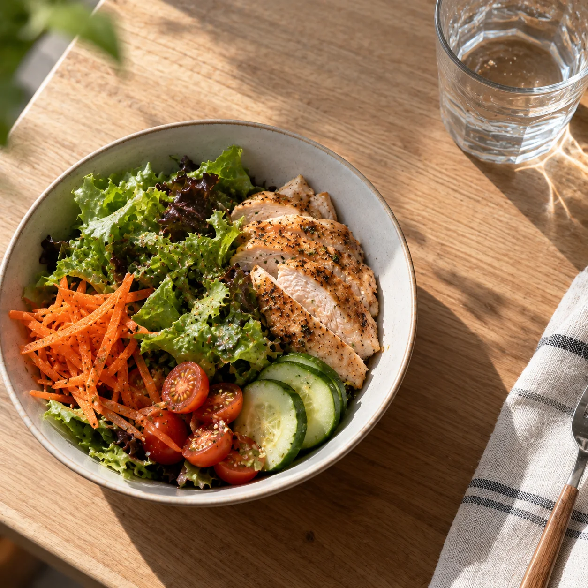
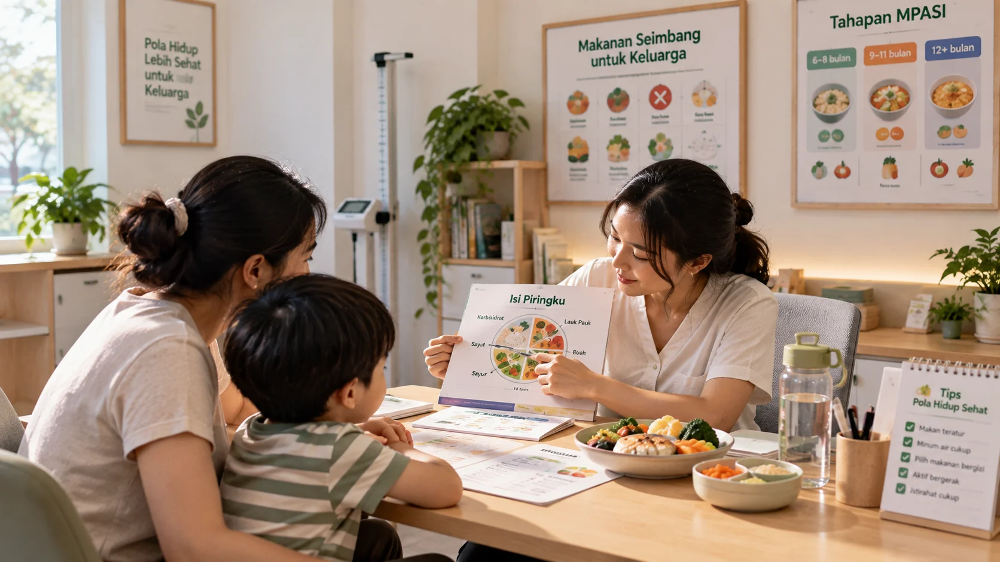
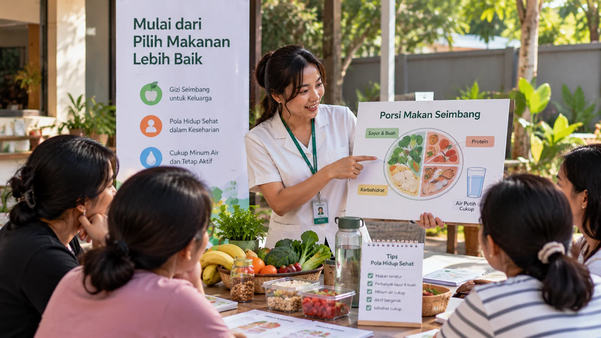
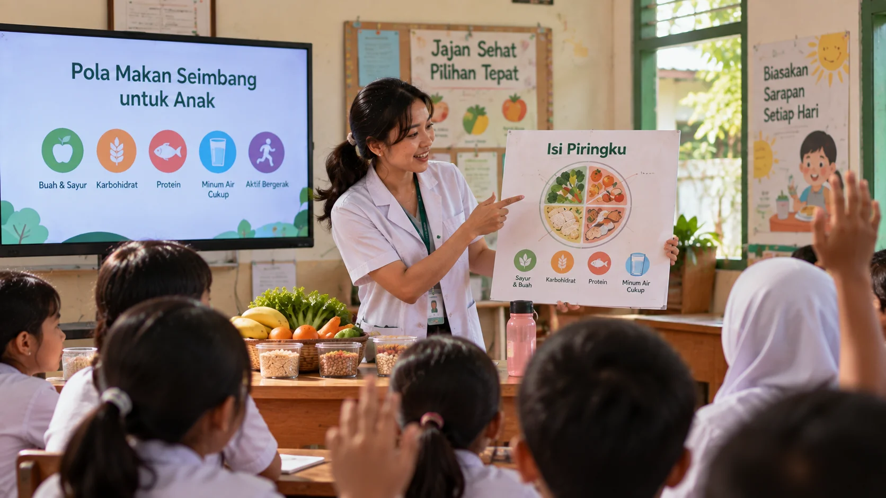

100+ Klien Terbantu
Mencapai body goals sehat
Panduan gizi personal dan empatik untuk membantu Anda mencapai gaya hidup sehat, berat badan ideal, dan kualitas hidup yang lebih baik dengan cara yang menyenangkan dan realistis.
Di Prima Konselor Gizi, kami memahami bahwa setiap individu memiliki kondisi tubuh, preferensi, dan gaya hidup yang unik. Kami tidak percaya pada metode diet instan yang menyiksa.
Pendekatan kami bersifat human-centered dan berbasis sains (Evidence-Based). Kami hadir sebagai pendamping yang empatik untuk membantu Anda mengubah pola makan, memahami nutrisi, dan mengelola kesehatan secara aman tanpa menggantikan fungsi perawatan medis klinis Anda.
Beragam layanan konseling gizi dirancang khusus untuk memenuhi tujuan kesehatan spesifik Anda bersama ahli terpercaya.
*Geser untuk melihat layanan lainnya
via Zoom / WA Call
Rencana menu mingguan
Cek rekam makan harian
Dukungan motivasi & chat
Bahan bacaan & panduan
Kami merancang proses yang jelas, transparan, dan mudah agar Anda merasa nyaman sejak langkah pertama.
Hubungi admin via WhatsApp untuk memilih waktu dan menceritakan sedikit tujuan Anda.
Konsultasi tatap muka/online, meliputi recall makanan 24 jam & analisis gaya hidup.
Konselor menyusun rencana pola makan personal (meal plan) yang realistis & sehat.
Monitoring progres harian/mingguan, tanya jawab santai, dan evaluasi hasil bersama.
Pilih program yang paling sesuai dengan kebutuhan dan target jangka panjang Anda.
Cocok untuk cek status gizi & pemahaman dasar.
Perubahan gaya hidup terstruktur dan terpantau.
Pola makan sehat untuk suami, istri, dan anak.
Menciptakan lingkungan yang nyaman dan edukatif bagi perjalanan sehat Anda.



"Awalnya ragu konsul gizi karena takut disuruh diet ketat. Ternyata sama sekali tidak! Konselor sangat paham kondisi saya, meal plan yang diberikan menggunakan bahan makanan lokal di Palangka Raya yang gampang dicari. BB turun 4kg dalam sebulan dengan cara yang sehat."
Karyawan Swasta
"Sangat membantu saya yang punya riwayat asam lambung tinggi. Edukasinya mudah dimengerti, tidak judgemental. Kini saya lebih pintar memilah makanan saat acara kumpul bareng teman tanpa harus menahan lapar."
Wiraswasta
"Ikut paket keluarga demi mengatur nutrisi anak balita yang GTM (Gerakan Tutup Mulut) dan suami yang obesitas. Hasilnya luar biasa! Kami diajarkan masak bareng dengan menu yang sama tapi porsi/komponen disesuaikan. Terima kasih banyak!"
Ibu Rumah Tangga
"Konsultasi online-nya sangat detail! Walau tidak tatap muka langsung, tapi pemantauan meal plan via chat sangat intens. Saya merasa seperti punya teman pengingat sehat setiap hari."
Mahasiswi
Kunjungi ruang konsultasi kami yang nyaman di Palangka Raya. Kami mendesain tempat ini agar Anda merasa rileks saat berdiskusi mengenai kesehatan nutrisi Anda.
Kota Palangka Raya, Kalimantan Tengah, Indonesia.
(Silakan hubungi admin untuk detail lokasi spesifik & reservasi jadwal)